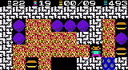

|
Software for Microsoft Smartphone 2003 and the .NET Compact Framework. Digger is a game for Smartphone 2003. The goal is to collect a given number diamonds and exit the level without getting hit by stones or ghosts. The status line tells you the level, number of lives, diamonds you collected and how many you need to collect. Press "*" to continue after you died. "#" will exit the program. 
digger.cab - Installer Disclaimer: The software and source code on this website is provided "AS IS" with no warranties of any kind. The entire risk arising out of the use or performance of the software and source code is with you. |